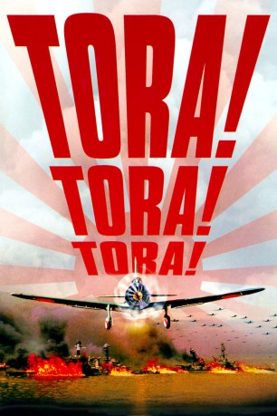
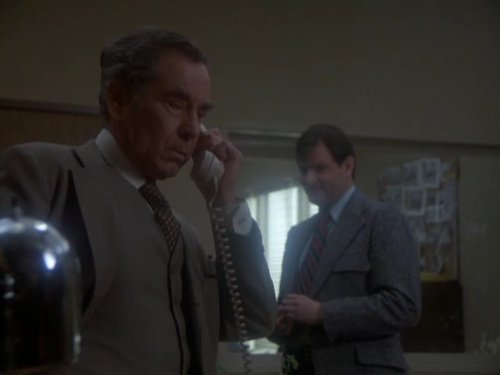
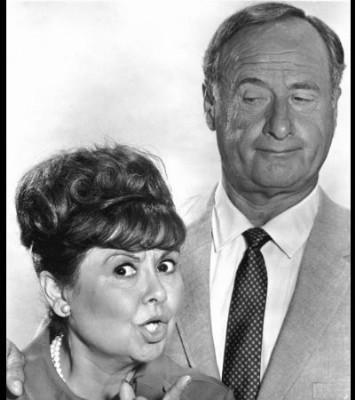

#4066 Tora! Tora! Tora!
Auszeichnungen: 1 Oscars gewonnen für 4 Oscars nominiert
 
 IMDB-Wertung: 7.5 / 10
IMDB-Wertung: 7.5 / 10  Tomatometer: 55
Tomatometer: 55  Metascore: 0
Metascore: 0 
Washington, 1939. Mit einer Dechiffriermaschine entziffern die USA den japanischen Funk-Geheimcode. Oberst Bratton beklagt jedoch, dass die Kommandeure keinen Zugang zu dem Code haben. Obwohl es Anzeichen für einen bevorstehenden japanischen Angriff gibt, werden die Berichte nicht ernst genommen. Am 7. Dezember 1941 geschieht das Unfassbare: Die Japaner greifen den US-Stützpunkt Pearl Harbor an. - Oscargekrönte Rekonstruktion des amerikanischen Kriegstraumas "Pearl Harbor".
Jahr: 1970
Dauer: 148 Minuten
FSK: 16
Land: Japan Studio: CentfoxTonspuren: DTS - ,
Untertitel: Englisch, Deutsch,
Auflösung: 720p (1280x544) Größe: 8325 MB
Genre: Action, Drama, Geschichte, Krieg
Regisseur:  Richard Fleischer, Kinji Fukasaku, Toshio Masuda
Richard Fleischer, Kinji Fukasaku, Toshio Masuda
Drehbuch: Kazuaki Kiriya
Soundtrack:
Darsteller:
 Martin Balsam als Admiral Kimmel
Martin Balsam als Admiral Kimmel- Sô Yamamura als Admiral Yamamoto
 Joseph Cotten als Henry Stimson
Joseph Cotten als Henry Stimson- Tatsuya Mihashi als Commander Genda
 E.G. Marshall als Colonel Bratton
E.G. Marshall als Colonel Bratton- Takahiro Tamura als Lt. Commander Fuchida
 James Whitmore als Admiral Halsey
James Whitmore als Admiral Halsey Wesley Addy als Lt. Commander Kramer
Wesley Addy als Lt. Commander Kramer- Frank Aletter als Lt. Commander Thomas
- Leon Ames als Frank Knox
 Richard Anderson als Captain John Earle
Richard Anderson als Captain John Earle- Keith Andes als General George Marshall
 Edward Andrews als Admiral Stark
Edward Andrews als Admiral Stark Neville Brand als Lieutenant Kaminsky
Neville Brand als Lieutenant Kaminsky George Macready als Cordell Hull
George Macready als Cordell Hull Norman Alden als Major Truman Landon
Norman Alden als Major Truman Landon-  Walter Brooke als Captain Theodore Wilkinson
- Jeff Donnell als Cornelia
- Richard Erdman als Colonel Edward F. French
 Jason Robards als General Short
Jason Robards als General Short- Hank Jones als Davey - Student Pilot in Biplane
- Ron Masak als Lt. Laurence Ruff - USS Nevada
 Jamie Farr als Multiple Characters , uncredited
Jamie Farr als Multiple Characters , uncredited Robert Karnes als Maj. John H. Dillon - Knox's Aide , uncredited
Robert Karnes als Maj. John H. Dillon - Knox's Aide , uncredited Kenner G. Kemp als Civilian Official Seated at Meeting Table , uncredited
Kenner G. Kemp als Civilian Official Seated at Meeting Table , uncredited Randall Duk Kim als Tadao - Japanese Messenger Boy , uncredited, unconfirmed
Randall Duk Kim als Tadao - Japanese Messenger Boy , uncredited, unconfirmed- Berry Kroeger als U.S. Army General , uncredited
- Ken Lynch als Rear Adm. John H. Newton - USS Lexington , uncredited
 Steve Pendleton als Destroyer Captain , uncredited
Steve Pendleton als Destroyer Captain , uncredited Charlie Picerni als Burning Sailor , uncredited
Charlie Picerni als Burning Sailor , uncredited Walter Reed als Vice Adm. William S. Pye , uncredited
Walter Reed als Vice Adm. William S. Pye , uncredited- Robert Shayne als Cmdr. William H. Buracker - Halsey's Operations Officer , uncredited
 G.D. Spradlin als Cmdr. Maurice E. Curts - Kimmel's Communications Officer , uncredited
G.D. Spradlin als Cmdr. Maurice E. Curts - Kimmel's Communications Officer , uncredited-  George Tobias als Captain on Flight Line at Hickam Field , uncredited
- David Westberg als Ens. Edgar M. Fair - USS California , uncredited
- Eijirô Tôno als Admiral Nagumo
- Shôgo Shimada als Ambassador Nomura
- Koreya Senda als Prince Konoye
- Jun Usami als Admiral Yoshida
- Kazuo Kitamura als Foreign Minister Matsuoka
- Leora Dana als Mrs. Kramer
- Asao Uchida als General Tojo
- Rick Cooper als Lieutenant George Welch
- Elven Havard als Doris Miller
- June Dayton als Miss Ray Cave
- Jerry Fogel als Lt. Commander William Outerbridge
- Shunichi Nakamura als Kameto Kuroshima
- Carl Reindel als Lieutenant Kenneth Taylor
- Edmon Ryan als Rear Admiral Bellinger
- Hisao Toake als Saburo Kurusu
Datei: X:\1970\Tora! Tora! Tora! (1970, FSK16, 1280x544).mkv seit 18.07.2016
Festplatte: HD 1900-1970
 Es gibt insgesamt 24 Filme in der Gruppe '1970'
Es gibt insgesamt 24 Filme in der Gruppe '1970'